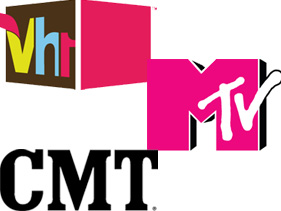

Miscellaneous Rant

WHERE DID THE MUSIC GO?
Recently, I read about a particularly funny story. Apparently, MTV is attempting to do music reviews of the latest albums releases. I laughed out loud. How could I not? Out of all those years they showed The Real World, Jersey Shore, and other reality television sewage, and they choose now to refocus?
In fact, aside from MTV, many of the so-called music channels have steered away from their main purpose, which was to keep audiences updated on music and show us exclusive content based on popular or influential musicians. VH1 has moved away from its music-heavy content to show outlandish reality shows with unhinged and delusional contestants. CMT has also decreased the amount of music and music videos they play and have opted for scripted shows and reality dramas instead. What does this say about audiences that tune in for these shows regularly? Do the executives at MTV, VH1, and CMT think that people are vapid and brainless enough to want to see these shows in place of the music programming typical of these stations? It’s not to say that if you watch reality show programming you are a stupid person, but to have a music station play unrelated, trash content on their channel thinking that we won’t notice is completely thinking less of us as an audience.
Oh, I have an idea! MTV should just go away. Your ratings have plummeted because you cater to a disloyal and fickle, female, teen audience. Your groundbreaking and rebellious reputation is long gone. So now it’s time for you to be gone. Take CMT with you. VH1 can stay because I lived for the Behind the Music series and those countdowns of the greatest songs of the 80s and 90s. MTV: we can’t take you seriously anymore, so it’s time to give another channel some shine if you can’t fully commit to going completely back to the music.
« Previous